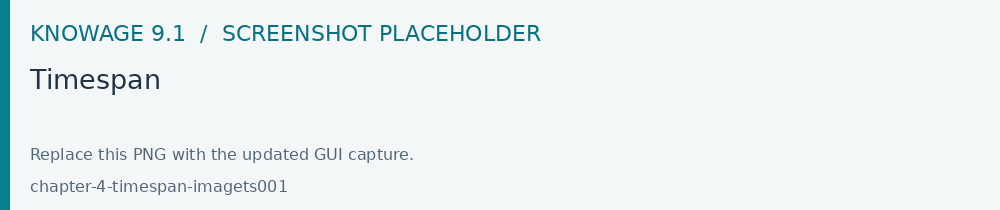
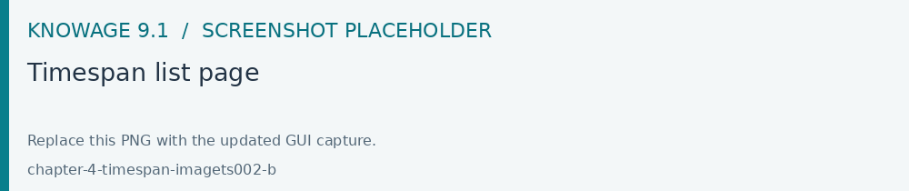
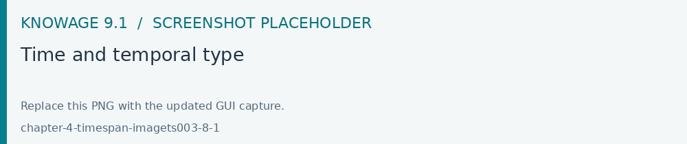
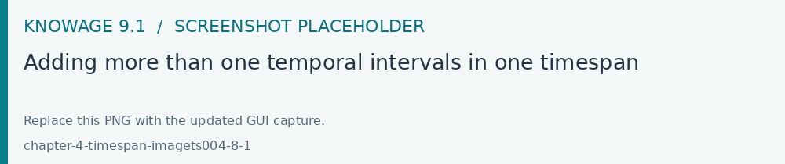

Time Span
Open Modules > Catalogs > Time Span to define reusable time or date intervals for QBE. Save each interval, associate the intended category and verify it on a temporal field in a QBE query.
Most of times a technical user develops a business solution for the use and consumption of a third not-skilled end user. In the contest of self-service capability of Knowage, when business models are available to allow end users to query data, it is possible to arrange time or temporal intervals so that end users can use these time periods to filter data when working with the QbE interface.
Create a new Timespan
The Timespan functionality is available under the CATALOGS section of the Knowage main menu.

Fig. 669 Timespan
When clicking on Timespan, the user sees the list of already defined periods, if any. Possible actions are opening, searching, deleting or cloning a specific timespan. The delete and clone icons are available next to the timespan item name.

Fig. 670 Timespan list page
To add a new timespan item just click the plus icon on the top right corner of the item list. The technical user is asked to assign a Name and to specify the Type, whether it is a Time or a Temporal period.
Time: need of a starting time and an endining time Temporal: need of a starting date and an ending date
In case of Time, the start and the end time should be entered otherwise the start and the end date should be entered. There is also the possibility to associate a Category for profiling issues. See the below figure, as an example.

Fig. 671 Time and temporal type
Whatever type is chosen, the technical user defines the start and the end of the interval and has to use the Save icon to insert it. Note that it is possible, for each type, to add more than one interval.

Fig. 672 Adding more than one temporal intervals in one timespan
Once that the intervals have been defined they can be used inside the QbE interface to filter time or temportal attributes. For this part, please refer to the Free Inquiry chapter, in particular when dealing with Filters.